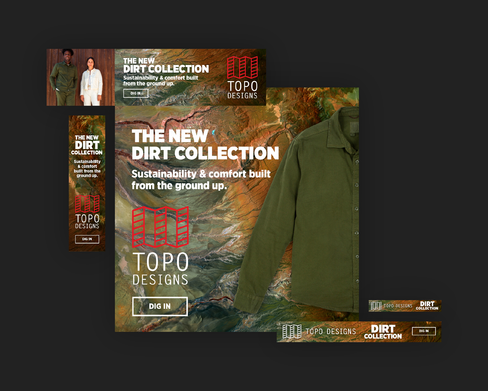
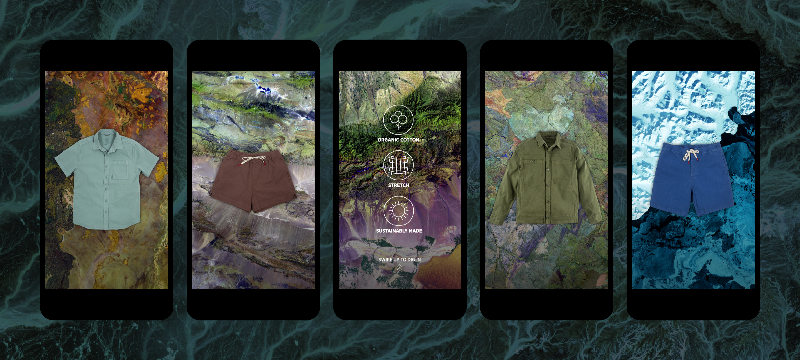

Background –
Built to clean up the dirty production process, the production of the Dirt Collection starts with responsibly-sourced materials such as organic cotton, and using a garment dyeing process resulting in 95% less water consumption. Using color enhanced aerial photography of the earth's terrain connects the tagline: "Built from the ground up." to the core features of the product and to where the product's materials originated.
Icons
Winter Colors


Summer Colors


The Online Experience –
We designed the online experience to present an easily digestible breakdown of what makes the Dirt Collection stand out, and why it stands on its own, in a sea of irresponsibly produced apparel.
Desktop
Mobile
Social Media & Digital Advertisements –
Alongside the marketing team, I produced a multitude of social media and digital advertisement assets to push campaigns across a broad range of social and ad platforms.
Digital Ads
Instagram Carousel
Instagram Story
Newsletters

Newsletters –
Under the direction of the brand manager, I created newsletters focused on marketing the Dirt Collection to segmented newsletter subscribers to drive sales and campaign awareness.